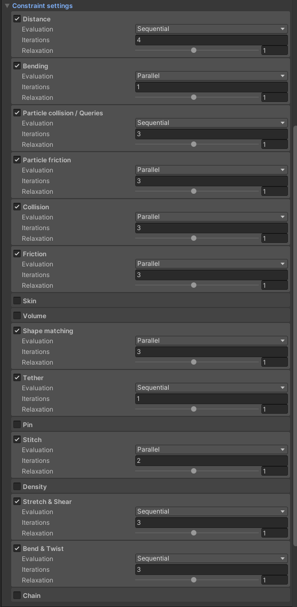
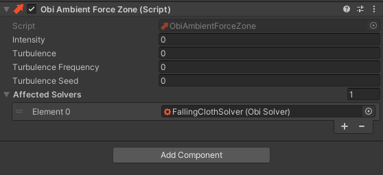
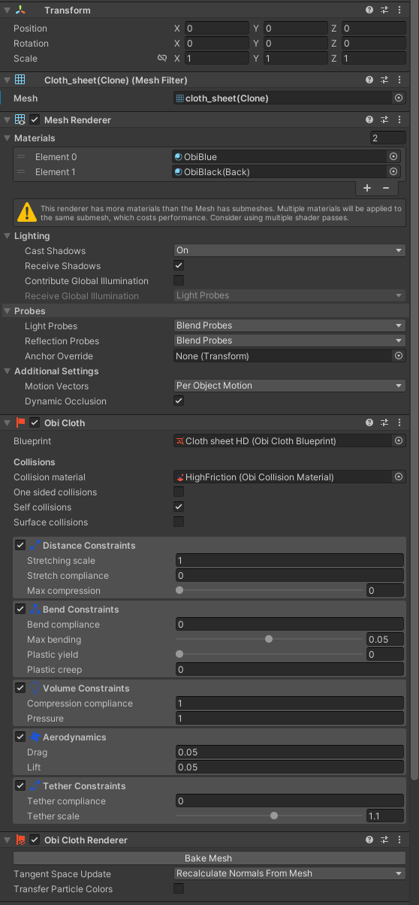
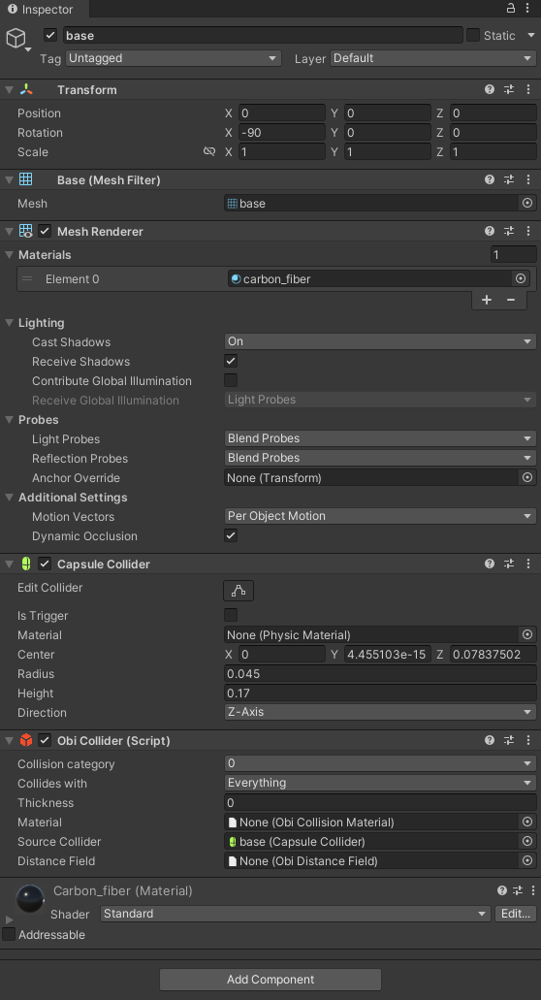

Kinova Gen2 Catching Cloth RL Environment Tutorial

In this tutorial, we will begin the multi-physics attributes in RFUniverse and create a scene in which a Kinova Gen2 robot arm tries to catch the falling cloth object. This environment is also RL-supported and codes will be in OpenAI-Gym style.
Quick Start with prebuilt scene
For users who are not familiar with Unity Editor, we have built this scene in the latest version of RFUniverse Release. Please download it, follow README to setup your environment and enjoy!
To use this environment, you can use the following code, which is also available here.
from pyrfuniverse.envs.multi_physics import KinovaGen2CatchingClothEnv
env = KinovaGen2CatchingClothEnv(urdf_file='../Mesh/jaco/j2s7s300_gym.urdf')
env.reset()
while 1:
obs, reward, done, info = env.step(env.action_space.sample())
if done:
env.reset()
Build Scene in Unity
First of all, we should build the scene in Unity Editor. In this experiment, we need a Kinova Gen2 (also known as Jaco) robot and a cloth which can interact with our robot. Besides, thanks to the awesome work of Obi Cloth, we can also add a Force Zone to the cloth to further affect its behavior and interaction to make this task more difficult and interesting. Let’s build this scene step by step.
Requirements
Clone the RFUniverse Unity side repository.
git clone https://github.com/mvig-robotflow/rfuniverse.git
Install the Unity Editor (>= 2021.3) and open the project cloned above.
Install Obi Cloth Plugin.
Add general prefab into a new scene
The first step is the same as last tutorial. We should create a new scene and load RFUniverse prefab from Assets/RFUniverse/Assets/Prefab. And remember to remove the original Main Camera and Directional Light.
Add Jaco robot to the scene
Next, we should add the robot, our agent, into this scene. We have also prepared Jaco robot in Assets/Assets/Prefab/Controller/Arm, just drag it into the scene. Don’t forget to drag the robot to Scene Attr under Base Agent (Script) in Inspector window to setup communication.
In this experiment, this robot will interact with a cloth later. However, Obi Cloth cannot simulate with very small cloth size. To make the scale of robot and cloth more suitable, we will scale our Jaco robot to 8.
Scaling robot is very common in simulation, since interacting with deformable objects is complex and with many constrains. Scaling robot or objects can help solve the complexness to some extend.
Add Obi cloth to the scene
Finally, we will add the cloth to the scene. Right click on the blank space in Hierarchy window and select 3D Object -> Obi -> Obi Cloth. You will see an ObiSolver with a ObiCloth hierarchical structure appears. Let’s rename the ObiSolver to FallingClothSolver for a more meaningful name.
Then, add a force zone under ObiSolver. We do this by adding an empty GameObject under ObiSolver and add component named Obi Ambient Force Zone. You can leave them here, we will further organize the parameters in the next section.
However, before going ahead, please check Obi Documentation to setup Burst backend. This will enhance the simulation quality and speed.
Add Custom Attributes
As mentioned in previous pages, we can write custom attributes to support any type of communication. Here we will do something like this. Before writing a custom attribute, we should first think two things:
What information or data do we want to get from simulation?
How do we want to control the objects in simulation?
First answer the first question: during RL, we may want the number of particles, cloth position, cloth velocity as well as some parameters of force zone so that RL policy can predict the next step.
Then the second question: We may change the gravity of solver to organize the difficulity and change the parameters of force zone to add more randomness.
Thus, we should write two functions in Attributes, one for organizing solver gravity and the other for setting force zone parameters; For data communication, we focus on the number of particles, cloth position, cloth velocity as well as parameters of force zone. Together with the grammar in pyrfuniverse, we can write codes for our custom Attributes, let’s name it FallingClothAttr, as the following.
// C# code, FallingClothAttr.cs
using Robotflow.RFUniverse.SideChannels;
using RFUniverse.Manager;
using UnityEngine;
using System.Linq;
using Obi;
namespace RFUniverse.Attributes
{
public class FallingClothAttr : BaseAttr
{
ObiSolver solver;
ObiCloth cloth;
ObiAmbientForceZone forceZone;
Vector3 lastStepClothPosition;
public override string Type
{
get { return "Falling_Cloth"; }
}
protected override void Init()
{
base.Init();
solver = GetComponent<ObiSolver>();
cloth = GetComponentInChildren<ObiCloth>();
forceZone = GetComponentInChildren<ObiAmbientForceZone>();
lastStepClothPosition = new Vector3(-99, -99, -99);
}
public override void CollectData(OutgoingMessage msg)
{
base.CollectData(msg);
int numParticles = cloth.solverIndices.Length;
Vector3 avgPosition = Vector3.zero;
for (int i = 0; i < numParticles; ++i)
{
avgPosition += cloth.GetParticlePosition(i);
}
avgPosition /= numParticles;
Vector3 avgVelocity;
if (lastStepClothPosition.y < -50)
{
avgVelocity = Vector3.zero;
}
else
{
avgVelocity = (avgPosition - lastStepClothPosition) / Time.fixedDeltaTime;
}
lastStepClothPosition = avgPosition;
// Number of particles
msg.WriteInt32(numParticles);
// Average position
msg.WriteFloat32(avgPosition.x);
msg.WriteFloat32(avgPosition.y);
msg.WriteFloat32(avgPosition.z);
// Average velocity
msg.WriteFloat32(avgVelocity.x);
msg.WriteFloat32(avgVelocity.y);
msg.WriteFloat32(avgVelocity.z);
// Force zone parameters
msg.WriteFloat32(forceZone.transform.eulerAngles.y);
msg.WriteFloat32(forceZone.intensity);
msg.WriteFloat32(forceZone.turbulence);
msg.WriteFloat32(forceZone.turbulenceFrequency);
}
public override void AnalysisMsg(IncomingMessage msg, string type)
{
switch (type)
{
case "SetForceZoneParameters":
SetForceZoneParameters(msg);
return;
case "SetSolverParameters":
SetSolverParameters(msg);
return;
}
base.AnalysisMsg(msg, type);
}
void SetForceZoneParameters(IncomingMessage msg)
{
// Force zone orientation
if (msg.ReadBoolean())
{
forceZone.transform.eulerAngles = new Vector3(0, msg.ReadFloat32(), 0);
}
// Force zone intensity
if (msg.ReadBoolean())
{
forceZone.intensity = msg.ReadFloat32();
}
// Force zone turbulence
if (msg.ReadBoolean())
{
forceZone.turbulence = msg.ReadFloat32();
}
// Force zone turbulence frequency
if (msg.ReadBoolean())
{
forceZone.turbulenceFrequency = msg.ReadFloat32();
}
}
void SetSolverParameters(IncomingMessage msg)
{
// Solver gravity
if (msg.ReadBoolean())
{
Vector3 gravity = new Vector3(msg.ReadFloat32(), msg.ReadFloat32(), msg.ReadFloat32());
solver.gravity = gravity;
}
}
}
}
# Python file, falling_cloth_attr.py
import pyrfuniverse.attributes as attr
from pyrfuniverse.side_channel.side_channel import (
IncomingMessage,
OutgoingMessage,
)
import pyrfuniverse.utils.rfuniverse_utility as utility
def parse_message(msg: IncomingMessage) -> dict:
this_object_data = attr.base_attr.parse_message(msg)
this_object_data['num_particles'] = msg.read_int32()
this_object_data['avg_position'] = [msg.read_float32() for _ in range(3)]
this_object_data['avg_velocity'] = [msg.read_float32() for _ in range(3)]
this_object_data['force_zone_orientation'] = msg.read_float32()
this_object_data['force_zone_intensity'] = msg.read_float32()
this_object_data['force_zone_turbulence'] = msg.read_float32()
this_object_data['force_zone_turbulence_frequency'] = msg.read_float32()
return this_object_data
def SetForceZoneParameters(kwargs: dict) -> OutgoingMessage:
compulsory_params = ['id']
optional_params = ['orientation', 'intensity', 'turbulence', 'turbulence_frequency']
utility.CheckKwargs(kwargs, compulsory_params)
msg = OutgoingMessage()
msg.write_int32(kwargs['id'])
msg.write_string('SetForceZoneParameters')
# Force zone orientation
if 'orientation' in kwargs.keys():
msg.write_bool(True)
msg.write_float32(kwargs['orientation'])
else:
msg.write_bool(False)
# Force zone intensity
if 'intensity' in kwargs.keys():
msg.write_bool(True)
msg.write_float32(kwargs['intensity'])
else:
msg.write_bool(False)
# Force zone turbulence
if 'turbulence' in kwargs.keys():
msg.write_bool(True)
msg.write_float32(kwargs['turbulence'])
else:
msg.write_bool(False)
# Force zone turbulence frequency
if 'turbulence_frequency' in kwargs.keys():
msg.write_bool(True)
msg.write_float32(kwargs['turbulence_frequency'])
else:
msg.write_bool(False)
return msg
def SetSolverParameters(kwargs: dict) -> OutgoingMessage:
compulsory_params = ['id']
optional_params = ['gravity', ]
utility.CheckKwargs(kwargs, compulsory_params)
msg = OutgoingMessage()
msg.write_int32(kwargs['id'])
msg.write_string('SetSolverParameters')
# Solver gravity
if 'gravity' in kwargs.keys():
msg.write_bool(True)
msg.write_float32(kwargs['gravity'][0])
msg.write_float32(kwargs['gravity'][1])
msg.write_float32(kwargs['gravity'][2])
else:
msg.write_bool(False)
return msg
Organize the parameters and components
Make the solver compatible
Now that all objects have been added to the scene, we should add components and organize parameters so that they can:
Work with
pyrfuniverseInteract correctly with each other.
Let’s start from organizing FallingClothSolver. We should add the previous-written FallingClothAttr scripts on it so that it can communicate with Python. Besides, organize other parameters according to the following image. For the meaning of these parameters, please refer to Obi Cloth Manual.

Besides, there are more specific settings in Obi. Please click the little triangle on the left side of Constraint settings to unfold these settings. Please set them according to the following image. For the details about these settings, please refer to Obi Constraints.

Register the Solver to Force Zone
Next, click on the Force Zone and you will see it in Inspector window. We should drag the solver to the Affected Solvers parameter so that the effect of this zone can be added on our cloth.

Add blueprint and mesh to cloth
Until now, you may still find the cloth invisible in the scene. Don’t be afraid, since you will see it after this step. Obi provides many pre-defined blueprints that we can use to simulate cloth. Please click the Obi Cloth object and click the right circle on Mesh parameter in Inspector window. You can find the cloth_sheet mesh and add it to Mesh. Do the same thing for Materials, Blueprint, Collision material and the following parameters until you get the same setting as the image below. All assets here are available in Obi so we don’t need to create from scratch.

Add Obi Collider to robot.
Until now, we have finished the settings to solver, cloth and force zone. However, our robot cannot interact directly with ObiCloth objects with Unity native collider. To make the robot arm interactable with ObiCloth objects, we should add ObiCollider to each part of the robot arm. This process is simple: unfold the hierarchy of Jaco robot and find all game objects that involve Collider components. Once you find one, add the ObiCollider component to it (just like the following image) and ObiCollider will compute its collider based on Unity native collider.

Make the cloth addressable
Let’s move on. Please imagine the RL process. At the beginning, the robot is equipped with a random policy and it cannot catch the cloth. The cloth will fall down on ground until this episode terminates. However, how should we reset the scene? Unfortunately, cloth cannot be controlled with SetTransform like the cube in last tutorial. So we must destroy the current cloth and re-load a new one. This will use the addressable asset in RFUniverse, which can be loaded during runtime.
To make the FallingClothSolver addressable, we need to first make it a prefab by draging it to any place in Project window. After this operation, you will see the logo on the left side of FallingClothSolver change to blue. Next, click on the FallingClothSolver in Project window, and go to the top menu. Find RFUniverse -> Add to addressable and click. Things finished!
Don’t forget to delete the FallingClothSolver in Hierarchy window since we will load it during runtime.
Write Python codes
Until now, we have finished preparation on Unity side. Now let’s move to Python side and write the OpenAI-Gym style codes! The full version code is available here. In this tutorial, we will go through the code and explain some key factors.
Pre-load assets
We will load FallingClothSolver during runtime, so we should pre-load it by passing in parameters.
def __init__(
self,
lock_eef_height=False,
with_force_zone=False,
force_zone_intensity=1,
force_zone_turbulence=10,
max_steps=100,
cloth_init_pos_min=(-1.5, 8, 3.3),
cloth_init_pos_max=(1.5, 8, 6.3),
executable_file=None,
assets=('FallingClothSolver',),
):
super().__init__(
executable_file,
assets=list(assets)
)
Get observation
Usually, get observation function will read data which is sent back from Unity. For eef_position, eef_velocity, we get it from ControllerAttr while other observations from FallingClothAttr.
def _get_obs(self):
catcher_position = self._get_eef_position()
cloth_position = self._get_cloth_position()
eef_velocity = self._get_eef_velocity()
cloth_velocity = self._get_cloth_velocity()
force_zone_parameters = self._get_force_zone_parameters() if self.with_force_zone else np.array([])
return np.concatenate((catcher_position, cloth_position, eef_velocity, cloth_velocity, force_zone_parameters))
def _get_eef_position(self):
return np.array(self.instance_channel.data[self.object2id['kinova']]['positions'][15]) / self.scale
def _get_eef_velocity(self):
return np.array(self.instance_channel.data[self.object2id['kinova']]['velocities'][15]) / self.scale
def _get_cloth_position(self):
return np.array(self.instance_channel.data[self.object2id['cloth']]['avg_position']) / self.scale
def _get_cloth_velocity(self):
return np.array(self.instance_channel.data[self.object2id['cloth']]['avg_velocity']) / self.scale
def _get_force_zone_parameters(self):
return np.array([
self.instance_channel.data[self.object2id['cloth']]['force_zone_orientation'] / 180 * math.pi,
self.instance_channel.data[self.object2id['cloth']]['force_zone_intensity'],
self.instance_channel.data[self.object2id['cloth']]['force_zone_turbulence'],
])
Reset scene
During reset, we should first destroy the last cloth and load a new one. The newly loaded cloth will also be affected by a random sampled force zone. Besides, we should also move the robot arm back to its initial pose.
def reset(self):
self._destroy_cloth()
self.ik_controller.reset()
self.t = 0
init_joint_positions = self.ik_controller.calculate_ik_recursive(
unity_eef_pos=self.init_eef_pos,
eef_orn=self.eef_orn
)
self._set_kinova_joints_directly(init_joint_positions)
self._load_cloth()
return self._get_obs()
def _load_cloth(self):
self.asset_channel.set_action(
action='InstanceObject',
name='FallingClothSolver',
id=self.object2id['cloth']
)
self.instance_channel.set_action(
'SetTransform',
id=self.object2id['cloth'],
position=list(self.np_random.uniform(low=self.cloth_init_pos_min, high=self.cloth_init_pos_max)),
)
self.instance_channel.set_action(
'SetSolverParameters',
attr_name='falling_cloth_attr',
id=self.object2id['cloth'],
gravity=[0, -9.8, 0],
)
if self.with_force_zone:
self.instance_channel.set_action(
'SetForceZoneParameters',
attr_name='falling_cloth_attr',
id=self.object2id['cloth'],
orientation=self.np_random.uniform(-180, 180),
intensity=self.force_zone_intensity,
turbulence=self.force_zone_turbulence,
turbulence_frequency=2,
)
self._step()
def _destroy_cloth(self):
self.instance_channel.set_action(
action='Destroy',
id=self.object2id['cloth']
)
self._step()
Step
The step() function is much simpler since it is similar to last tutorial: just move the robot end effector to a given relative distance. Note that in this task, we will lock the height of end effector to a fixed value to prevent the robot from moving too high and the force zone will take no effect. Besides, if we detect the cloth is lower than a tolerance, this episode will be early done.
def step(self, action: np.ndarray):
delta_pos = action * 0.05
curr_pos = self._get_eef_position()
if self.lock_eef_height:
target_pos = np.array([
curr_pos[0] + delta_pos[0], self.kinova_init_y / self.scale, curr_pos[2] + delta_pos[1]
])
else:
target_pos = curr_pos + delta_pos
joint_positions = self.ik_controller.calculate_ik_recursive(
unity_eef_pos=target_pos,
eef_orn=self.eef_orn
)
self._set_kinova_joints(joint_positions)
self.t += 1
obs = self._get_obs()
reward = self._compute_reward(obs)
done = False
fail = self._check_fail(obs)
if fail or self.t == self.max_steps:
done = True
if fail:
reward -= self.max_steps
info = {
'is_success': done and not fail
}
return obs, reward, done, info